ГПтест
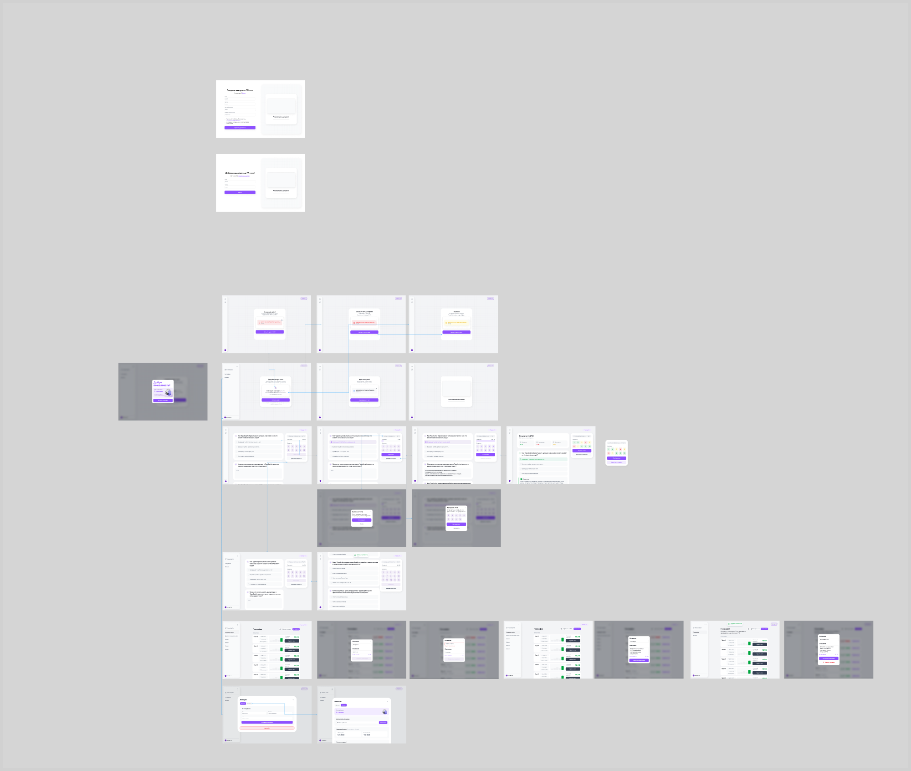
Учусь и работаю параллельно
Столкнулся с проблемой: не мог проверить знания по редким темам. Поговорил с одногруппниками — оказалось, не один такой. Решил провести опрос.
Цель — выявить реальную проблему
Опросил студенческие чаты — аудитория своя, знакомая. 127 ответов за 2 недели.
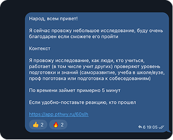
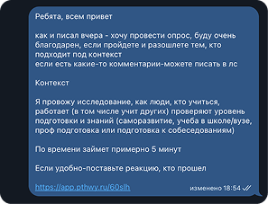
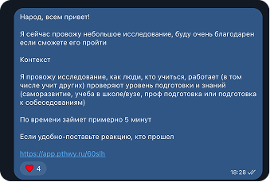
Проблема подтвердилась
78% регулярно готовятся самостоятельно. 59% используют ChatGPT как костыль. 57% считают главным — объяснение ошибок. 73% положительно отреагировали на описание сервиса.
Аудитория шире, чем казалось
Большинство готовятся не только к экзаменам — но и к собеседованиям, курсам, повышению квалификации. Неожиданно заинтересовались репетиторы. Добавил учительский кабинет в бэклог.
Рынок РФ открыт
Главный конкурент — ChatGPT: неудобно оплатить, формата теста нет. Прямые конкуренты (Quizgecko, Examica) в РФ не работают. Разбора ошибок на русском нет ни у кого.
На основе опроса — три гипотезы для первой итерации
H1 — Объяснение ошибок помогает учиться, а не просто проверяться.
H2 — PDF/DOC/DOCX покроют 90% сценариев загрузки.
H3 — Аналитика прогресса повышает возвращаемость.
Не концентрировался на дизайне — проверял функционал
20 человек, 2 недели. Обратную связь собирал ежедневным опросом — за участие давал токены.
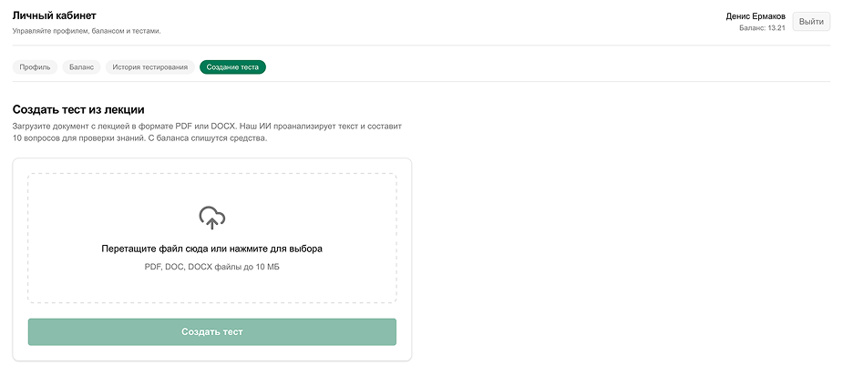
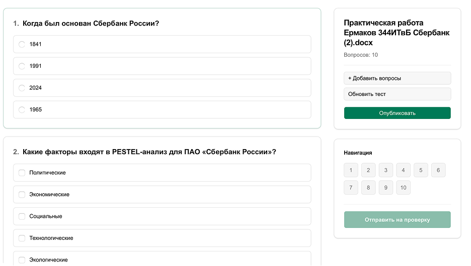
Собрал обратную связь, ушёл на доработку
Технические неполадки, неточные вопросы, простые объяснения. Средняя оценка: 3.6 / 5.
Дизайн + фидбек
Изучил конкурентов, собрал макеты на основе обратной связи.
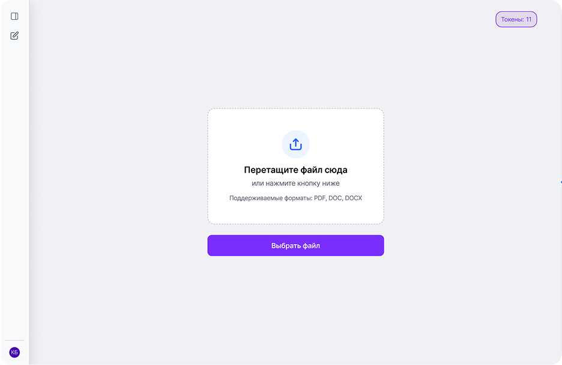
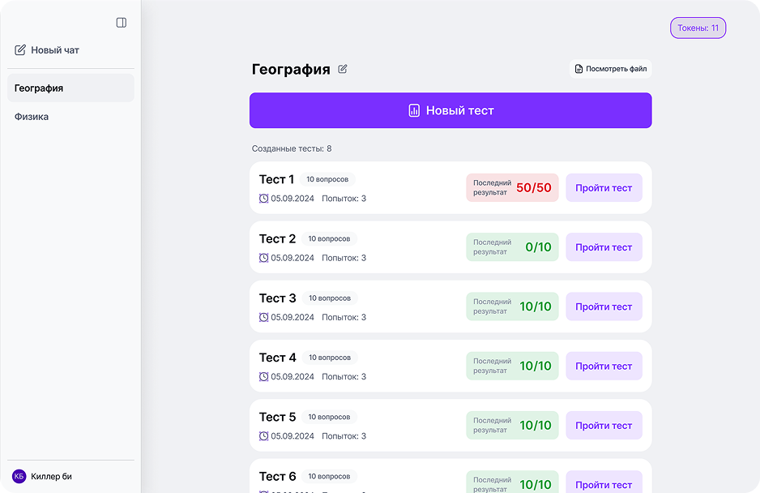
4 интервью с пользователями
Флоу понятен всем. Объяснения ошибок — понравились. Проблемы: непонятный копирайт кнопок и отсутствие нейминга файлов. Исправил.
Продовый вариант — ГПтест
Полностью рабочий сервис в коде.
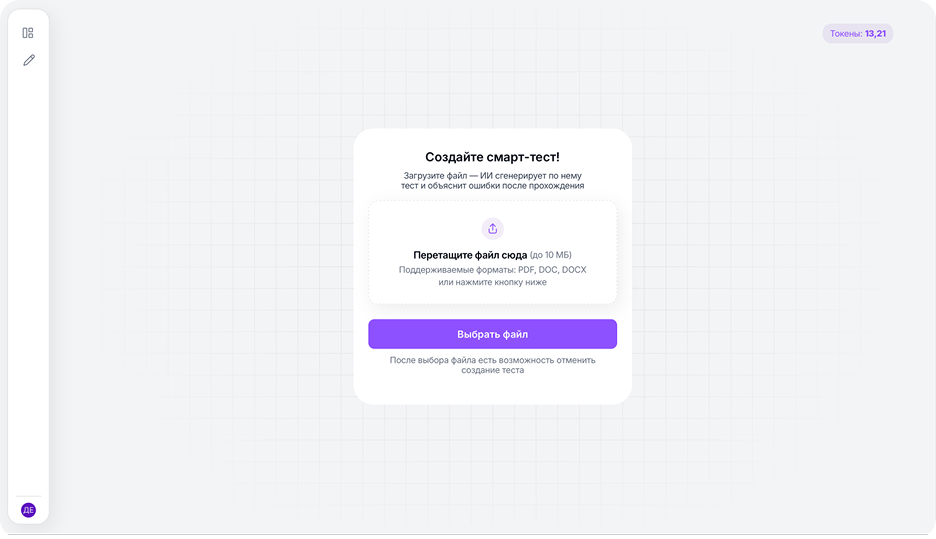
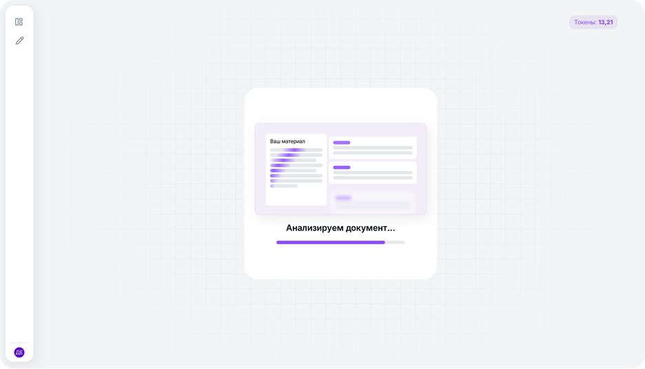
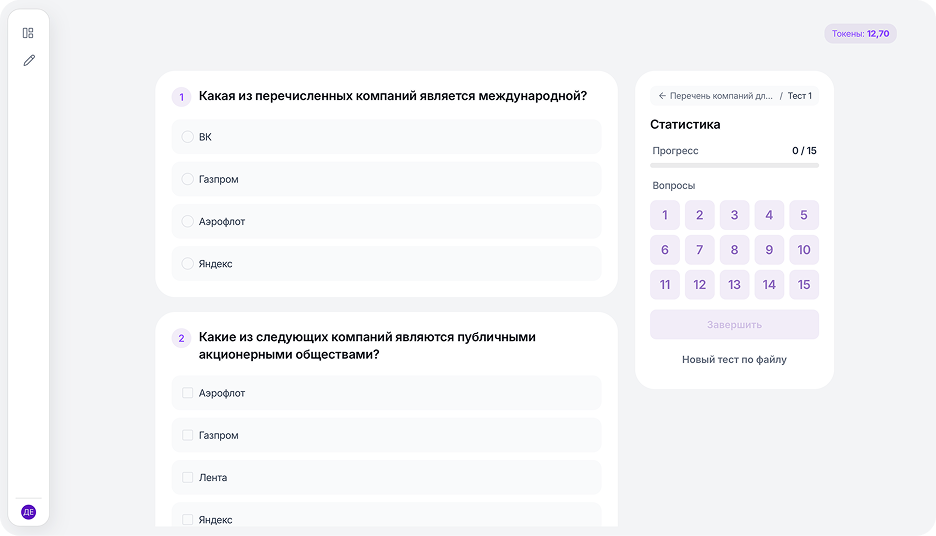
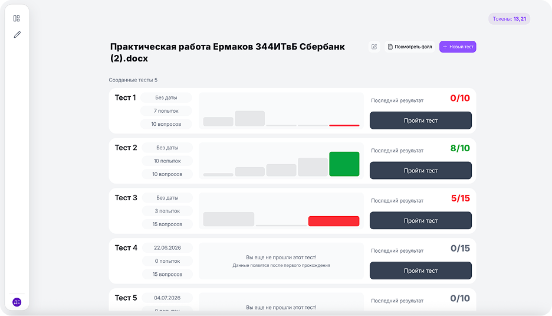
Пользуются студенты и репетиторы
По фидбеку добавил: аналитику прогресса, попап выхода из теста, автоскролл к новым вопросам, анимацию генерации.
Сервис работает, развитие в процессе
- Учительский кабинет с аналитикой по группам
- Платёжная система
- Прозрачные списания токенов
- Фильтры генерации: кол-во вопросов, формат, таймер